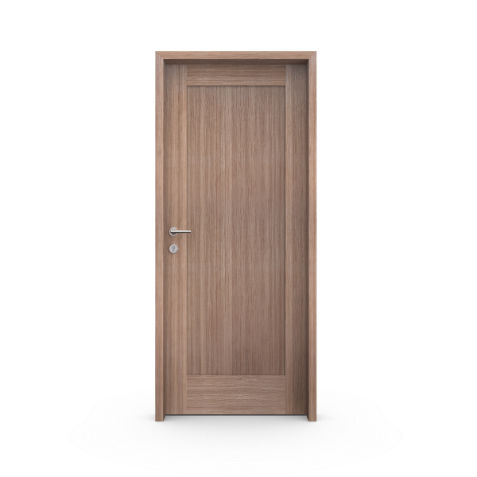

Render del modelo
Render del modelo
Placa
Una hoja lisa, tres maneras de expresar el diseño: enchapada, pintada o foliada.
Puertas de interior / Colección
La continuidad de una superficie lisa. El ritmo de los tableros. La presencia de la madera.
Encontrá tu diseño y descubrí las terminaciones que le dan carácter.
Explorar la colección
Render del modelo
Una hoja lisa, tres maneras de expresar el diseño: enchapada, pintada o foliada.
 Render del modelo
Render del modelo
Tableros de perfil ligero. Enchapados de madera y opción pintada en blanco.
Conocer esta puerta Render del modelo
Render del modelo
Tableros definidos, con opciones de nogal macizo o terminaciones pintadas.
Conocer esta puerta
Render del modeloUn tablero de proporciones verticales, con opciones de madera o vidrio.
Conocer esta puerta Render del modelo
Render del modelo
Dos tableros y un encuentro central marcado que define su presencia.
Conocer esta puerta Render del modelo
Render del modelo
Un tablero de proporciones clásicas, con versiones de madera o vidrio.
Conocer esta puertaEl encuentro con la arquitectura
Un perímetro visible, una buña o la integración con el plano de la pared. Explorá los sistemas y encontrá la solución para tu proyecto.
Conocer los sistemas de marco La combinación se confirma según la hoja, la apertura y la obra.